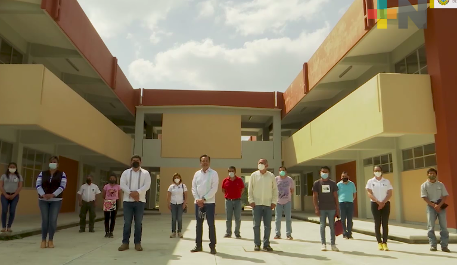

ITSCHI CV
Formado en el Instituo Tecnologico Superior de Chicontepec por ingenieros con ética y liderazgo, comprometidos con el desarrollo social, sustentable y económico del entorno, capaces de diseñar, desarrollar, implementar y mejorar infraestructura computacional que responda a las necesidades de los diferentes sectores. El Instituto Tecnológico Superior de Chicontepec, fue creado con la finalidad de dar una opción de estudio a las y los jóvenes que egresan de los diferentes bachilleratos de la región de la huasteca Baja que comprenden los municipios de Chicontepec, Benito Juárez y Huayacocotla principalmente, ofreciendo tres carreras de alto impacto dentro de la región huasteca y del país.